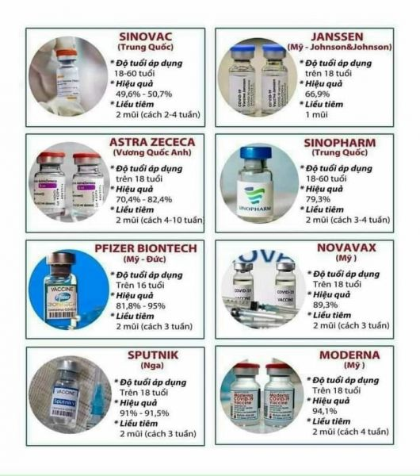
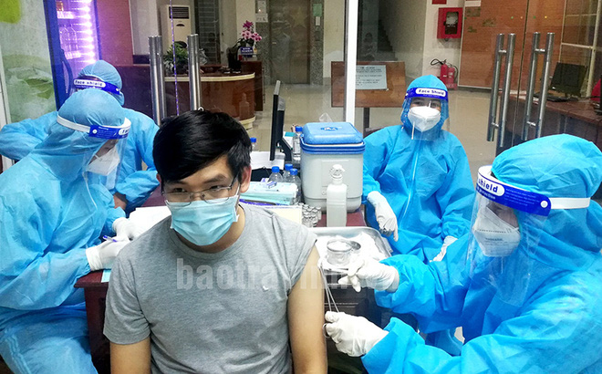

Những điều quan trọng cần biết về vacxin ngừa Covid-19
- Vắc-xin ngừa COVID-19 có hiệu quả trong việc giúp bảo vệ chống mắc bệnh nghiêm trọng và tử vong, bao gồm cả các biến thể của vi-rút gây bệnh COVID-19 hiện đang lưu hành (vd. biến thể Delta).
- Nếu quý vị được tiêm chủng đầy đủ, quý vị có thể tiếp tục các hoạt động mà quý vị đã làm trước đại dịch. Tuy nhiên quý vị nên đeo khẩu trang ở nơi công cộng trong nhà nếu đang ở khu vực có mức độ lây truyền từ đáng kể đến cao. Được tiêm chủng đầy đủ và đeo khẩu trang sẽ tăng tối đa khả năng bảo vệ khỏi biến chủng Delta và khả năng lây truyền bệnh cho người khác.
- Quý vị có thể có tác dụng phụ sau khi chủng ngừa. Đây là những vấn đề bình thường và sẽ biến mất trong vài ngày.
- Mọi người từ 12 tuổi trở lên đều nên đi chích ngừa. Tìm hiểu về cách tìm nơi tiêm vắc-xin COVID-19.
- Những người bị suy giảm miễn dịch từ mức trung bình tới nghiêm trọng được khuyến nghị tiêm liều bổ sung vắc-xin mRNA COVID-19 (nghĩa là Pfizer-BioNTech hoặc Moderna).
- Các nhóm đối tượng nhất định được khuyến nghị tiêm mũi nhắc lại của >Pfizer-BioNTech.
Các loại vacxin được cấp phép tại Việt Nam
Hiệu quả của việc tiêm phòng vacxin ngừa Covid-19
Vắc-xin ngừa COVID-19 có hiệu quả trong việc bảo vệ quý vị khỏi COVID-19, đặc biệt là tránh được bệnh nghiêm trọng và tử vong. Vắc-xin COVID-19 có thể làm giảm nguy cơ lây lan vi-rút gây bệnh COVID-19 ở người. Nếu đã được tiêm chủng đầy đủ, quý vị có thể tiếp tục các hoạt động mà quý vị đã làm trước đại dịch. Tìm hiểu thêm về những gì quý vị có thể thực hiện khi đã được tiêm chủng đầy đủ.
Các nghiên cứu cho thấy vắc-xin COVID-19 có hiệu quả, đặc biệt là giúp quý vị không bị bệnh nặng ngay cả khi quý vị mắc COVID-19. Tìm hiểu thêm về các lợi ích khi tiêm chủng.
Vắc-xin COVID-19 dạy cho hệ miễn dịch của chúng ta cách nhận biết và chiến đấu với chủng vi-rút gây bệnh COVID-19. Thường phải mất 2 tuần sau khi chủng ngừa để có thể tạo dựng hàng rào bảo vệ (miễn dịch) chống lại vi-rút gây bệnh COVID-19. Điều đó có nghĩa là một người vẫn có thể mắc COVID-19 trước hoặc ngay sau khi tiêm chủng, sau đó phát bệnh do vắc-xin chưa có đủ thời gian để phát huy khả năng bảo vệ.
Mọi người được coi là đã được tiêm chủng đầy đủ là 2 tuần sau khi tiêm mũi thứ hai của vắc-xin ngừa COVID-19 của Pfizer-BioNtech hoặc Moderna, hoặc 2 tuần sau khi tiêm vắc-xin ngừa COVID-19 loại tiêm 1 liều của Johnson & Johnson's Janssen. Để được bảo vệ tối ưu nhất, mọi người nên tiêm tất cả liều được khuyến nghị của vắc-xin COVID-19. Tìm hiểu thêm về đối tượng được khuyến nghị tiêm liều bổ sung hoặc liều nhắc lại.
Đôi khi mọi người có thể bị nhiễm COVID-19 sau khi được tiêm chủng đầy đủ. Tuy nhiên, điều này chỉ xảy ra với một tỷ lệ nhỏ, ngay cả với biến thể Delta. Khi xảy ra lây nhiễm ở người đã được tiêm chủng, bệnh có xu hướng nhẹ.
Tính an toàn của vacxin ngừa Covid-19
Hàng triệu người ở Hoa Kỳ đã tiêm vắc-xin ngừa COVID-19 và những loại vắc-xin này đã trải qua và tiếp tục trải qua quá trình giám sát an toàn chuyên sâu nhất trong lịch sử Hoa Kỳ. Quy trình giám sát này bao gồm việc sử dụng các hệ thống giám sát an toàn đã thiết lập và mới nhằm đảm bảo tính an toàn của vắc-xin COVID-19. Vắc-xin COVID-19 không thể làm cho quý vị mắc bệnh COVID-19. Đọc thêm về những lầm tưởng và tìm hiểu sự thật về vắc-xin ngừa COVID-19.
CDC đã phát triển công cụ mới, v-safe, nhằm giúp chúng tôi nhanh chóng tìm ra bất kỳ vấn đề an toàn nào đối với vắc-xin COVID-19. V-safe là một công cụ kiểm tra sức khỏe sau tiêm chủng, trên nền tảng điện thoại thông minh, dành cho những người được tiêm vắc-xin ngừa COVID-19. Hãy tìm hiểu xem chính phủ liên bang đang nỗ lực như thế nào để đảm bảo sự an toàn của vắc-xin COVID-19.
Dù vắc-xin ngừa COVID-19 được phát triển nhanh chóng, nhưng tất cả các bước đều được thực hiện đủ nhằm đảm bảo tính hiệu quả và độ an toàn của vắc-xin.
Sau khi tiêm chủng COVID-19, quý vị có thể có một số tác dụng phụ. Đây là những dấu hiệu bình thường cho thấy cơ thể quý vị đang xây dựng hàng rào bảo vệ. Tác dụng phụ từ việc tiêm chủng COVID-19, như mệt mỏi, đau đầu, hoặc ớn lạnh, có thể ảnh hưởng tới khả năng thực hiện các hoạt động hàng ngày của quý vị nhưng chúng sẽ biến mất trong vài ngày. Tìm hiểu thêm về những gì sẽ xảy ra sau khi tiêm chủng.
Miễn dịch toàn dân làm cho bệnh dịch khó lây lan từ người sang người. Thậm chí nó còn bảo vệ những đối tượng không thể tiêm chủng, như trẻ sơ sinh hoặc người bị dị ứng với vắc-xin. Tỷ lệ phần trăm số người cần có sự bảo vệ để đạt được miễn dịch cộng đồng tùy thuộc vào căn bệnh.
Các biến thể của Covid-19 và Vacxin
Vắc-xin ngừa COVID-19 đã được Cơ Quan Quản Lý Thực Phẩm và Dược Phẩm Hoa Kỳ (FDA) phê duyệt hoặc cho phép sử dụng giúp bảo vệ chống lại Delta và các biến thể đã biết khác.
Những loại vắc-xin này đặc biệt hiệu quả trong việc giúp mọi người không bị bệnh nặng hoặc tử vong do COVID-19.
Để bảo vệ tối đa khỏi biến thể Delta và ngăn chặn khả năng lây lan biến thể này sang người khác, vui lòng đeo khẩu trang ở trong nhà tại nơi công cộng nếu quý vị đang ở khu vực có mức độ lây truyền đáng kể hoặc cao dù quý vị đã tiêm chủng đầy đủ.
Chúng tôi chưa biết mức độ hiệu quả của vắc-xin chống lại các biến thể mới có thể xuất hiện như thế nào.